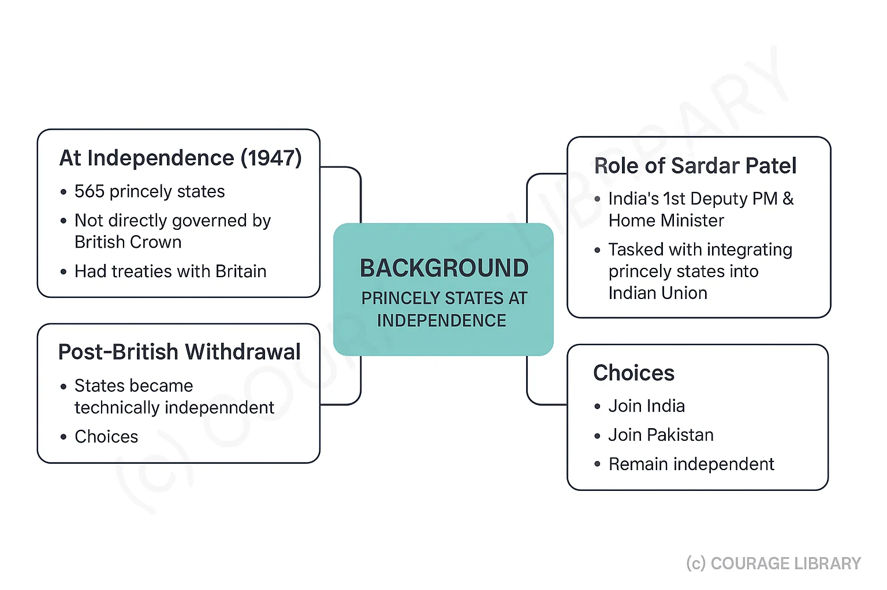
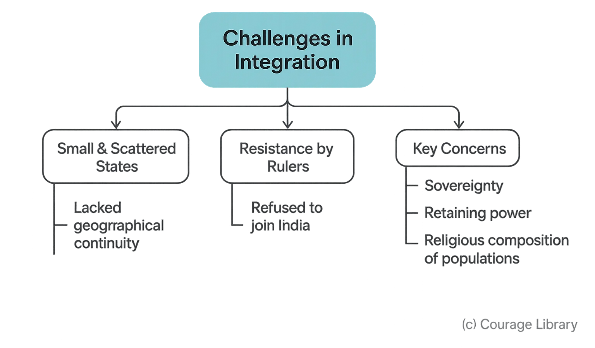
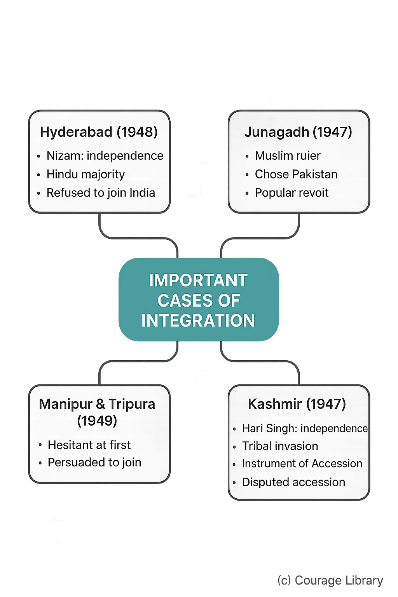
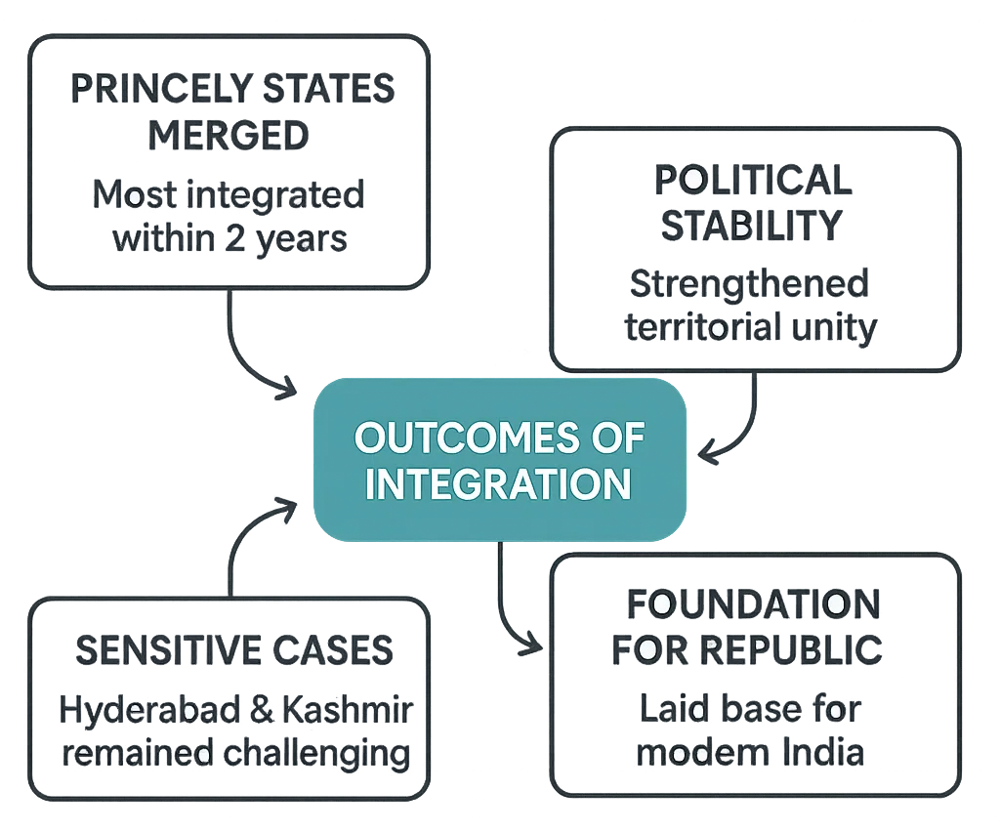

SSC CGL - Detailed Guide 2025
Self-Paced Course
Integration of Princely States
Reference: Lucent GK, NCERT Class 6–12
Background
- At Independence (1947), India had 565 princely states.
- These states were not directly governed by British Crown but had treaties with Britain.
- On British withdrawal, these states became technically independent and had to choose
between:
- Joining India,
- Joining Pakistan, or
- Remaining independent.
- Sardar Vallabhbhai Patel, India’s first Deputy Prime Minister and Minister of Home Affairs, was tasked with integrating these states into the Indian Union.


Challenges in Integration
- Many states were small and scattered.
- Some rulers resisted joining India.
- Concerns over sovereignty, power, and religious composition.
Steps Taken for Integration
-
Instrument of Accession
- A legal document offered by the Indian government.
- Princely states signed it to join India.
- Gave India control over defense, foreign affairs, and communications.
- States retained internal autonomy initially.
-
Role of Sardar Vallabhbhai Patel and V.P. Menon
- Patel: The “Iron Man of India,” led diplomatic efforts.
- V.P. Menon: Civil servant, strategist who worked closely with Patel.
- Used diplomacy, persuasion, and threats when needed.

Important Cases of Integration
a) Hyderabad (1948)
- Large, rich state ruled by Nizam, who wanted independence.
- Had a majority Hindu population but Muslim ruler.
- Nizam refused to join India.
- “Operation Polo” (Police Action) in September 1948 annexed Hyderabad.
- Indian army succeeded peacefully in 5 days; Nizam surrendered.
b) Junagadh (1947)
- Muslim ruler in Hindu-majority region.
- Chose to join Pakistan; India opposed.
- Popular revolt and plebiscite led to integration with India.
c) Kashmir (1947)
- Maharaja Hari Singh initially wanted independence.
- Tribal invasion from Pakistan-backed forces occurred.
- Signed Instrument of Accession in Oct 1947 to seek India’s help.
- Accession remains a disputed issue.
d) Manipur and Tripura
- Initially hesitant to join India.
- Joined in 1949 after persuasion.
Outcomes
- Within 2 years, most princely states merged with India.
- Provided political stability and territorial unity.
- Set foundation for the Republic of India.
- Hyderabad and Kashmir remained most sensitive cases.

Quick Revision Points
- 565 princely states existed at the time of independence.
- They had the choice to join India, Pakistan, or remain independent.
- Patel and Menon led the integration using diplomacy and strategy.
- Key states: Hyderabad (Operation Polo), Junagadh (plebiscite), Kashmir (accession), Manipur & Tripura.
- Instrument of Accession used to legally integrate states.
- Resulted in a politically united India within 2 years.
Developed By Jan Mohammad
Next
Start Your SSC CGL Journey Now!
Join Courage Library to experience disciplined study and expert support.
Be a Couragian!